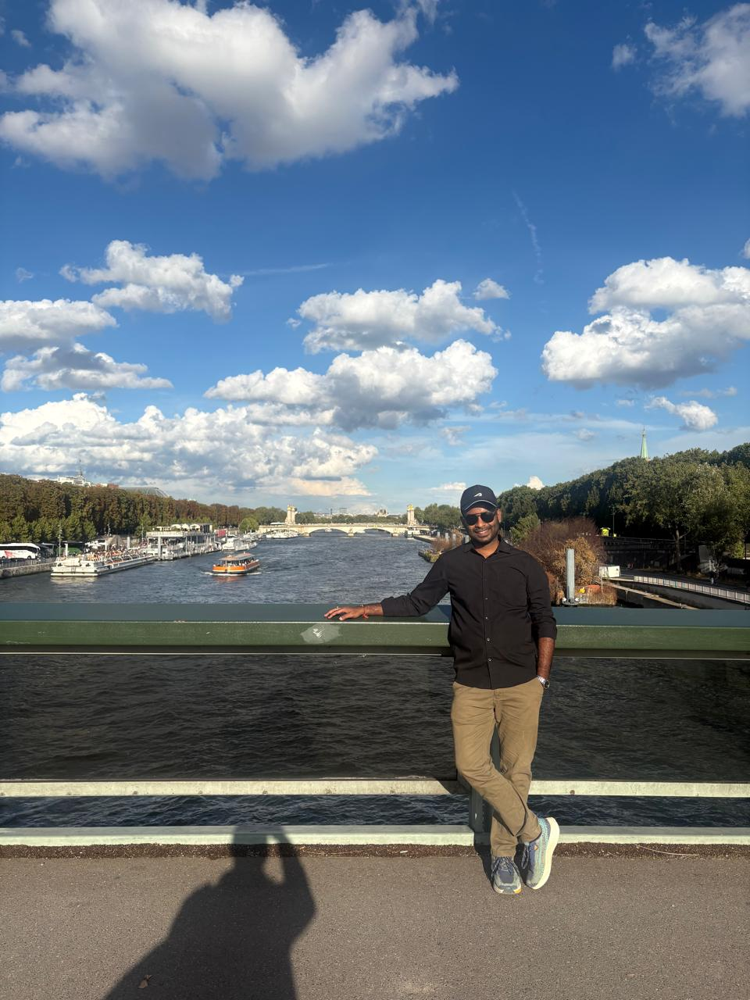

01 · AI / Markets
AI for Government Bond Markets
Developed and deployed an AI/ML yield-prediction model for G-Sec bond trading using 30 years of Bloomberg data.
BFSI professional with 8+ years of experience across Treasury, Commercial Credit, Risk Management, Business Leadership and Digital Transformation at State Bank of India. Currently pursuing the IPMX programme at IIM Lucknow.

My professional journey has taken me across multiple dimensions of banking — from managing customers and businesses at the branch level to commercial credit, portfolio risk and global markets.
At State Bank of India, I have worked across business development, commercial lending, investment valuation, market and financial risk, regulatory frameworks and technology-led transformation.
These experiences have given me a view of financial services from both the ground level and the institutional perspective — balancing customer needs, commercial objectives, regulation, risk and technology.
I am currently pursuing the IPMX programme at IIM Lucknow, expanding this experience into strategy, leadership and enterprise transformation.
From credit and branch leadership to commercial banking and Treasury — a career built across different operating layers of financial services.
Market and financial risk, investments, money markets and regulatory frameworks.
Commercial credit, portfolio management, credit risk parameters and compliance.
Applying automation, analytics and AI/ML to financial-services workflows.
Business growth, team leadership, stakeholder management and transformation.
A selection of initiatives spanning AI/ML, automation, commercial banking, digital channels and FX.
Developed and deployed an AI/ML yield-prediction model for G-Sec bond trading using 30 years of Bloomberg data.
Automated daily P&L processing for Global Markets, reducing manual reconciliation effort.
Grew a commercial credit portfolio while managing sector exposure, credit appraisal and portfolio quality.
Used YONO, YONO Business and CRM analytics to improve digital adoption and lending activity.
Collaborated in building a real-time FX platform enabling corporate customers to view live rates and execute transactions.
Worked across investment valuation, risk frameworks, policy implementation and regulatory reporting.
IIM Lucknow
Institute of Engineering & Management, Kolkata
Recognised as Best Branch Manager for FY 2021–22 across 1,800+ branches.
Discipline, preparation, teamwork and performance under pressure extend well beyond the workplace.
Represented the state of West Bengal at the U-18 All India National Football Tournament.
Visharad in Hindustani Classical Music, with the highest proficiency grade in Tabla.
How AI can improve decision-making, customer experience and operational efficiency in banking.
Connecting business priorities, technology and execution to create measurable enterprise impact.
Exploring the intersection of financial markets, digital channels, data and customer-centric innovation.
I'm open to conversations around business strategy, financial services, digital transformation, AI and leadership.